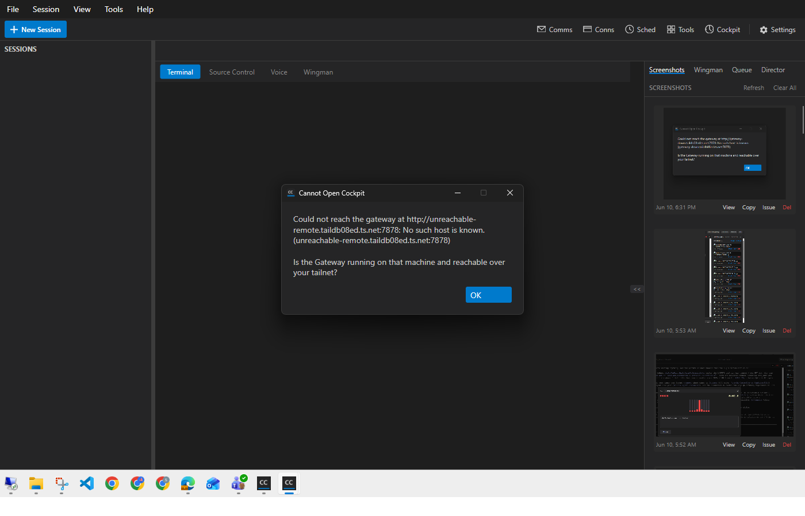

| # | Criterion | Expected | Actual (my own proof) | Result |
|---|---|---|---|---|
| AC1 | Remote gateway configured + no local gateway: click issues GET http://<remote>:7878/cockpit and opens the front-door URL that endpoint returns. |
Log baseUrl=http://<remote>:7878; browser opens the remote front door. |
With gateway.url=http://soren-north.taildb08ed.ts.net:7878 and nothing listening on local 7878, clicking BtnCockpit logged:BtnCockpit_Click: asking gateway for Cockpit URL, baseUrl=http://soren-north.taildb08ed.ts.net:7878 BtnCockpit_Click: opening https://soren-north.taildb08ed.ts.net/ (up=True, baseUrl=http://soren-north.taildb08ed.ts.net:7878)Probed the configured remote gateway and opened the remote front door https://soren-north.taildb08ed.ts.net/. |
PASS |
| AC2 | No gateway configured: behavior unchanged - probes loopback default http://127.0.0.1:7878/cockpit. |
Log baseUrl=http://127.0.0.1:7878. |
With the gateway block removed from config.json, clicking BtnCockpit logged:BtnCockpit_Click: asking gateway for Cockpit URL, baseUrl=http://127.0.0.1:7878 BtnCockpit_Click FAILED (baseUrl=http://127.0.0.1:7878): No connection could be made because the target machine actively refused it. (127.0.0.1:7878)Loopback default used exactly as before. |
PASS |
| AC3 | Trailing slash: configured http://host:7878/ produces request URL http://host:7878/cockpit. |
Unit test green. | ResolveCockpitBase_TrailingSlash_StripsSlashSoCockpitPathIsClean passed: asserts base = http://host:7878 and base+"/cockpit" = http://host:7878/cockpit (no //cockpit). |
PASS |
| AC4 | Error dialog names the exact probed URL; the "Gateway tray app running on this machine?" hint appears only for the loopback default. | Loopback failure -> local-machine hint naming 127.0.0.1:7878. Remote failure -> remote URL named, tailnet hint, local hint absent. | Loopback case (read from live dialog element tree):Could not reach the gateway at http://127.0.0.1:7878: No connection could be made because the target machine actively refused it. (127.0.0.1:7878) Is the Gateway tray app (cc-director-gateway) running on this machine?Remote-down case (config gateway.url=http://unreachable-remote.taildb08ed.ts.net:7878):Could not reach the gateway at http://unreachable-remote.taildb08ed.ts.net:7878: No such host is known. (unreachable-remote.taildb08ed.ts.net:7878) Is the Gateway running on that machine and reachable over your tailnet?Each dialog names the exact probed URL; the local-machine hint appears ONLY for loopback, the tailnet hint ONLY for remote. Screenshot below. |
PASS |
| AC5 | No 127.0.0.1/localhost Cockpit URL is ever opened in the browser when a remote gateway is configured. |
Browser navigates only to the remote front door for a remote setup. | AC1's open line opened https://soren-north.taildb08ed.ts.net/ (the remote front door) - never a loopback URL. In the loopback-config case the probe failed and opened nothing (dialog only). Invariant kept. |
PASS |
| AC6 | Unit tests present and green: ResolveCockpitBase_UrlConfigured_ReturnsConfiguredUrl, ResolveCockpitBase_NoUrl_ReturnsLocalhostDefault, trailing-slash case. |
3/3 green. | Passed CockpitUrlResolverTests.ResolveCockpitBase_TrailingSlash_StripsSlashSoCockpitPathIsClean [5 ms] Passed CockpitUrlResolverTests.ResolveCockpitBase_NoUrl_ReturnsLocalhostDefault [< 1 ms] Passed CockpitUrlResolverTests.ResolveCockpitBase_UrlConfigured_ReturnsConfiguredUrl [< 1 ms] Total tests: 3 Passed: 3 Failed: 0 |
PASS |
Dialog names the remote URL http://unreachable-remote.taildb08ed.ts.net:7878 with the tailnet reachability hint;
the local-machine "Gateway tray app on this machine?" hint is correctly absent.

The loopback / AC2 dialog content was captured by reading the live Avalonia dialog element tree via UI Automation (the verbatim text is quoted under AC4 above) - a stronger, pixel-independent proof. A flat pixel capture of that dialog was occluded by another of the user's running Director windows sitting on top at the same screen coordinates (those windows must not be touched per CLAUDE.md rule 0), so the UIA text read is the authoritative evidence for the loopback case.
MainWindow.BtnCockpit_Click + new UI-free CockpitUrlResolver + tests changed.
DirectorView._gatewayUrl left unchanged with a // TODO #267-followup note exactly as the issue mandates (OUT of scope)./cockpit endpoint, or auth-middleware change (confirmed by diff).gateway.url; loopback only when unconfigured.Build succeeded. 0 Warning(s) 0 Error(s).